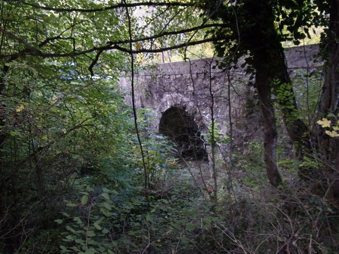

L'église de Sainte Marie de Courondes dépendait de l'abbaye de Saint Martin de Lenis
Elle devrait se trouver sur la commune de Cailla, proche du Rébenty
A ce jour je n'ai pas su encore localiser précisément ce lieu.
Ce qu'en dit Jean Lautier :
Courondes: "Notre dame de Corondes"
Cette paroisse était perchée au sommet d'une colline entre les villages de Cailla et Marsa : sa localisation, au sommet d'une butte sur la rive gauche du Rébenty, est problématique compte tenu de la faible densité des ruines. Il serait encore plus aléatoire de vouloir préciser sur ces fragments épars l'emplacement de l'église
Mes demandes à la mairie de Cailla n'ont pas encore abouti, je n'ai pour l'instant pas encore étudié précisément le cadastre de Cailla de 1833 pour voir si je saurais en tirer quelque chose
L'indice le plus exploitable dont je dispose aujourd'hui est la carte de Cassini

Carte de Cassini - centrée sur Courondes - Géoportail.
La carte du diocèse d'Alet de 1781 (voir la page sur l'abbaye de St Martin) donne la même information (même si met aussi un autre Courondes à la place de l'abbaye de St Martin...)
De ces cartes, il serait possible de déduire que Courondes se trouverait à droite d'un ruisseau se jetant dans le Rébenty, en proximité de la rivière et du village de Cailla (qui aurait originellement été peuplé avec des ex-habitants de Courondes, d'après le facebook de cette commune).

Cette dernière carte montre aussi 2 cours d'eau encadrant Cailla
Lundi 25 octobre, me basant sur les cartes de Casini et IGN, j'avais décidé de partir à la recherche de ce lieu aujourd'hui disparu.
Je n'ai même pas su trouver un seul mur de pierre, mais ce fut une bien bonne aventure...

Premier ruisseau rencontré après l'embranchement de Cailla sur la route longeant le Rébenty
L'emplacement pour me garer étant après le pont sur le petit ruisseau, le Rébenty est alors à Gauche de la route et le ruisseau vient bien sur la rive droite du Rébenty

Un sentier longe le ruisseau sur quelques mètres jusqu'à un poste de chasse. Ce chemin a dû être plus large, mais semble aujourd'hui peu entretenu

Un sentier semble monter. Est-ce un mur de pierre soutenant le chemin qu'on voit là, à droite (si lors de ma montée je n'avais aucun doute, après la suite du périple je ne suis plus aussi sûr...


Un sentier monte toujours avec une pente qui me semble justifier l'existence d'un chemin... ?

Est ce un escalier ? Comme dit précédemment, initialement je n'avais quasiment pas de doute sur l'existence d'un chemin aménagé à flanc de colline, mais la suite m'a laissé plus perplexe...

De l'autre coté du ruisseau une étrange montagne en forme de pyramide a des strates de pierre à peine plus pentue que mon chemin me semble-t-il... Mais pas d'aménagement humain visible


Toujours en grimpant mais en restant au plus près du Rébenty, le sentier ne grimpe plus mais longe un espèce de mur rocheux naturel qu'on aperçoit derrière de petits arbres
Je quitte alors le sentier pour passer au dessus du "mur" rocheux,
persuadé (à tort) de trouver là, un plateau avec l'ancien village de Courondes
La Montée a été rapide, je n'ai pas du prendre plus d'un quart d'heure pour arriver à ce point, et cela malgré mes hésitations sur différents sentiers montants (tracés par les sangliers ?)
En fait, de plateau, je me trouve sur un ligne de crête avec vue sur le village de Cailla que je pensais naïvement beaucoup plus loin...
La grande ferme de Cailla

Le village de Cailla

Gros plan sur l'église de Cailla
La montagne pyramide, signalée plus haut comme de l'autre coté du ruisseau, s'avère entourée de Champs : est-ce elle qui accueillait le village de Courondes en son temps ?

Vue vers Puilaurens
Vue vers Axat

Gros plan vers la vallée du Rébenty qui se poursuit en remontant le cours de l'Aliès vers le col du Campérié, Puilaurens et la Serre de la Quières
Sur une trentaine de mètre de profondeur, rien ne pousse à part quelques rares touffes d'herbes, puis commencent les prés qui vont jusqu'au village de Cailla. Pas de trace de mur comme si cette zones n'avait jamais été propice à la culture, même pas à la vigne.
Pour le retour il me semble alors plus facile de suivre le bord du pré qui semble descendre jusqu'au ruisseau en contre bas. Quelle erreur...
A noter que l'une de mes chaussures commence à présenter des signes de faibles : la semelle de mon pied droit commence à se décoller grave, (et la gêne qui me fait boiter de ce pied depuis un mois s'intensifie) : choisir un chemin évidemment plus facile qu'à l'allée est de toute logique...


Dernières vues de Cailla avant de descendre dans la gorges qui borde le ruisseau


Quelques vues du ruisseau, qui parfois a de l'eau ruisselante, parfois simplement présentant des poches d'eau, parfois à sec
Ces photos rendent peu l'impression d'enfermement que j'ai ressentie au fond de cette gorge, et de beauté sauvage aussi. La seule information qui en ressort est le peu de luminosité...
Et comme passer d'un trou d'eau à un autre a fini par me voir glisser au fond d'un de ceux ci : en plus d'avoir une chaussure qui me lâchait, je me suis retrouvé avec le pantalon trempé jusqu'au dessus des genoux
Le nombre de photos a au moins l'avantage de montrer que le chemin du retour vers la route du Rébenty s'est révélé beaucoup plus long que prévu. Malheureusement elles ne montrent pas la complexité de ce chemin de croix. A deux reprises j'ai été obligé de quitter le cours d'eau pour monter sur la paroi la plus facile de la gorge : je me trouvais alors arrivé à une chute trop profonde pour que je puisse passer, la première de 2 mètres environs, mais la deuxième devait en faire plus de 6 : quand le ruisseau est en eau la vue doit en être remarquable.
Suivre le cours d'eau n'est pas dénué de danger non plus. J'ai eu la surprise en me retournant pour prendre une photo de m'apercevoir que j'étais passé sous un fil de fer barbelé, après vérification si je n'avais pas regardé mes pieds en passant dessous j'aurais pu m'y accrocher


Contournement de la grande chute par la rive gauche, coté de la colline en forme de pyramide
C'est à ce moment là que la semelle m'a définitivement lachée...
Les arbres morts formant une croix, symbole de la fin de mon calvaire
L'arrivée à la route, pont sur le ruisseau
Il m'a bien fallu plus d'une heure de "descente" pour enfin retrouver la voiture. Cela me paraissait à ce point tellement long que je commençais à m'inquiéter de devoir continuer de marcher de nuit...
Je n'ai toujours pas compris, alors que j'avais l'impression
de suivre des chemins parallèles à l'allée comme au retour et
d'avoir beaucoup descendu en suivant le bord du champ de Cailla,
comment j'ai pu finalement avoir encore à descendre autant le ruisseau pour me retrouver à la route...
Aucune trace de Courondes lors de ce périple.
Ai-je suffisamment cherché au niveau de la crête ou faut-il que je cherche un autre ruisseau, plus loin ?
Ce sera sûrement le sujet d'une prochaine aventure...
Ce mardi, avec Renaud Labadie-Savy, sa mère et ma fille nous avons tenté de faire une recherche plus systématique sur plusieurs points pertinents le long des hauteurs du Rébenty facilement accessibles depuis le sentier Cathare entre Cailla et Marsa.
Nous n'avons pas trouvé de trace de mobilier pouvant démontrer de façon certaine une occupation permanente humaine sur les 3 points qui nous ont paru le plus judicieux.
Le premier de ces lieux est un promontoire (sorte de micro plateau en contrebas du chemin) au dessus du Rébenty à la limite de Marsa (encore à Cailla).
Promontoire au dessus de Rébenty à la limite de Marsa - micro-plateau
Est-ce un escalier ?
Est-ce un empilement humain de rocher ?
Le deuxième de ces lieux est le point culminant le long du Rébenty. C'est une longue crête mais finalement trop étroite pour avoir été bâtie, les pentes trop abruptes de chaque côté. Par contre un prolongement en contre-bas part vers le Rébenty avec un chemin qui mène jusqu'en haut d'un petit promontoire... que nous n'avons pu apercevoir que de loin - en effet nous n'avons pas encore exploré ce dernier lieu.
La crête à explorer vue du champ qui s'étant à sa base

Vue depuis la crête vers la colline escargot qui sera notre prochaine étape
En effet nous avons privilégié lors de notre dernière tentative la colline escargot qui est couronnée par cette espèce de spirale rocheuse qu'on peut constater sur les photos ci-dessus. Spirale qui aurait pu donner le nom de Courondes (couronne) ?
Entre les 2 lieux on peut voir le tracé d'un ancien coude du Rébenty qui a été détourné pour faciliter le passage de la route au 19° siècle. Ce coude aurait permis une exploitation facile de la rivière (gué, pêcherie, bois flottés...) et être le point de départ d'un chemin vers Saint Martin ?
Au bout du champ précédant la colline escargot un amas de pierre - Ces pierres auraient-elles pu servir à des constructions ? des restes du cimetière de Courondes ? (en effet un cimetière aurait été trouvé lors de la mise en culture d'un certain champ - non précisément localisé)
Souvenir de la précédente tentative - la colline la plus proche de Cailla
En conclusion - rien de décisif pour l'instant pour la localisation de Courondes : une autre tentative à venir pour explorer le prolongement de la crête qui a le triple avantage d'être en proximité du coude du Rébenty, d'avoir un chemin qui va jusqu'au boût et d'être le point le plus concordant par rapport aux cartes du diocèse d'Alet et de Casini (dont la fiabilité reste douteuse...).
Pour finir, un instant "panique" sur le chemin du retour, toutes ces vaches se dirigeant dans un bel ensemble vers nous...
Couronde : ne pas prendre le chemin que vous avez emprunté. En bout de "couronne" comme vous dite, la rivière suivait le fond du grand champ, ce village pouvait être au-desus, cela fait un replat après être monté de 80 m environ. Mais il n'y a aucune trace, un ancien décédé m'avait dit avoir vu un seuil de porte côté montagne (impossible à retrouver). Quant au cimetière, il était plus loin, il a été découvert lors du creusement de la route de Marsa. A environ 900 m de la "couronne" (direction Marsa) il y a un tournant en épingle à cheveu, cet ancien m'avait dit avoir marché dans sa jeunesse sur les ossements se trouvant dans le talus de déblai entre le tournant et le Rébenty. A cet époque l'on se préoccupait peu d'archéologie, dommage.
Pour "courounde", ou le remblais car l'on a dû remblayer pour construire la route et détourner le Rébenty et ainsi creuser avec la dynamite un passage juste avant la cascade que l'on voie.
Peut-être que l'habitat constitué de 4 à 5 feux (supposition) et d'une chapelle (appelée pompeusement église) se situait sur cette crête dynamitée où de l'autre côté de la rivière, toujours près de l'eau ?
A Boulude l'on retrouve des pierres de construction, l'amorce de murs, à Cailla rien, des pentes impossibles, ou les maisons étaient en bois et torchis ou bien les pierres ont servis à construire le village (je n'y crois pas trop).
Les habitants de Cailla disait le "vieux Cailla" d'un geste large sans jamais prèciser où c'était, et poutant dans leur jeunesse tout était cultivé et propre dans les sous bois. Seule la mémoire est restée.
Il n'y a que les ossements retrouvés en perçant la route (les tombes devaient être très peu enterrées vu le sol rocailleux).
1000 ans après difficile d'y voir clair et difficile d'affirmer quelque chose.

L'ancien cours du Rébenty, il faisait une boucle à cet endroit, aujourd'hui transformée en pré suite à la construction de la route de grande communication n°7 avec dynamitage de ce pan de montagne qui bloquait le passage de la rivière - voir la cascade crée par ce dynamitage ci-dessous

Cascade artificielle créée lors de la construction de la route - vue du haut

Cascade artificielle créée lors de la construction de la route - vue du bas
Remarque : cette boucle du Rébenty avec un très faible dénivellé pouvait être une réserve de pêche pour les habitants de Courondes et ainsi justifier leur installation près de la rivière. Les invasions des sarazins, puis des espagnols (ou autres pillards et pastoureaux) suivant le lit de la rivière auraient pu justifier le déplacement du village vers les hauteurs de Cailla.